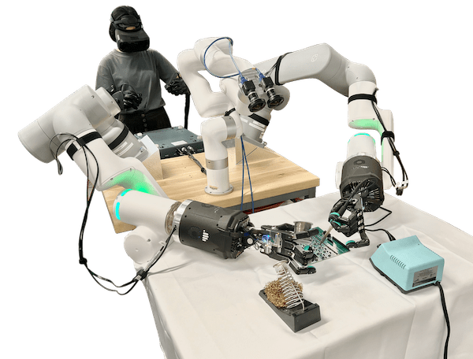

DexNex is the HAND ERC flagship testbed. It involves hands, arms, vision, AI, and teleoperation, and will evolve over the next several years as new robotic hand technology is developed and implemented. DexNex performance is evaluated with application and system-level benchmarks.
